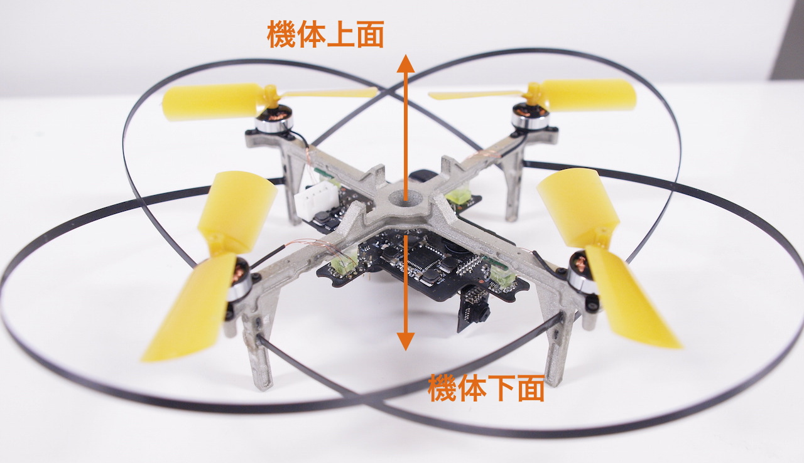
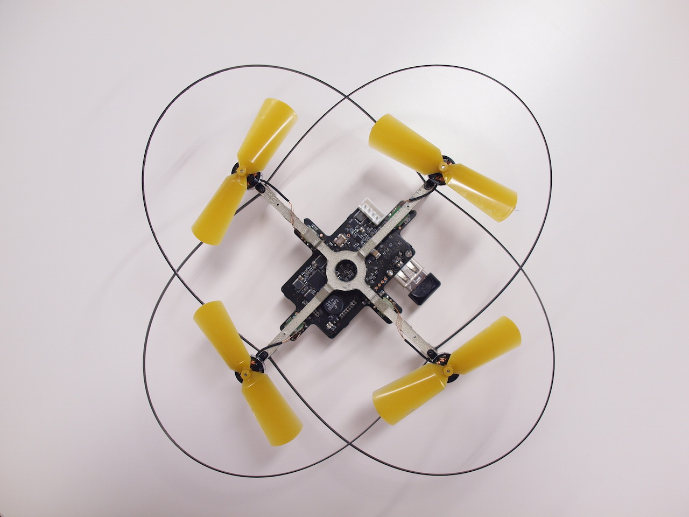
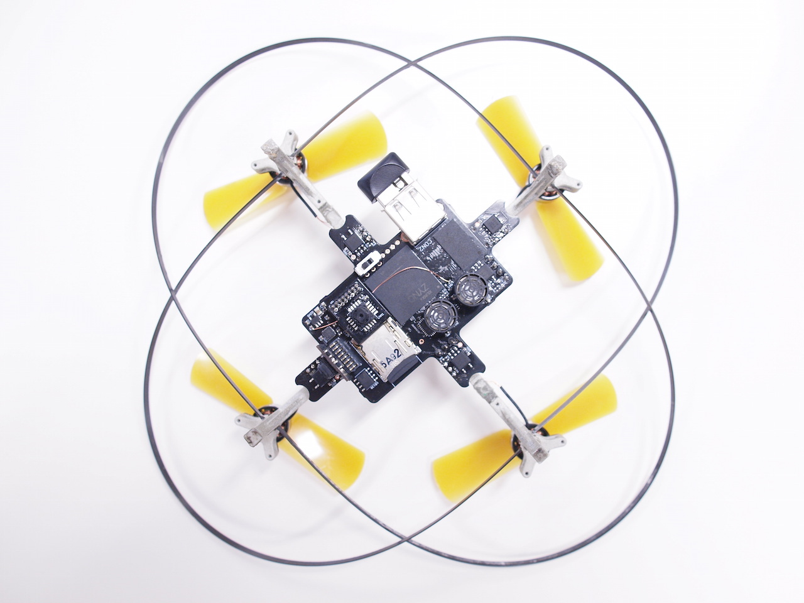
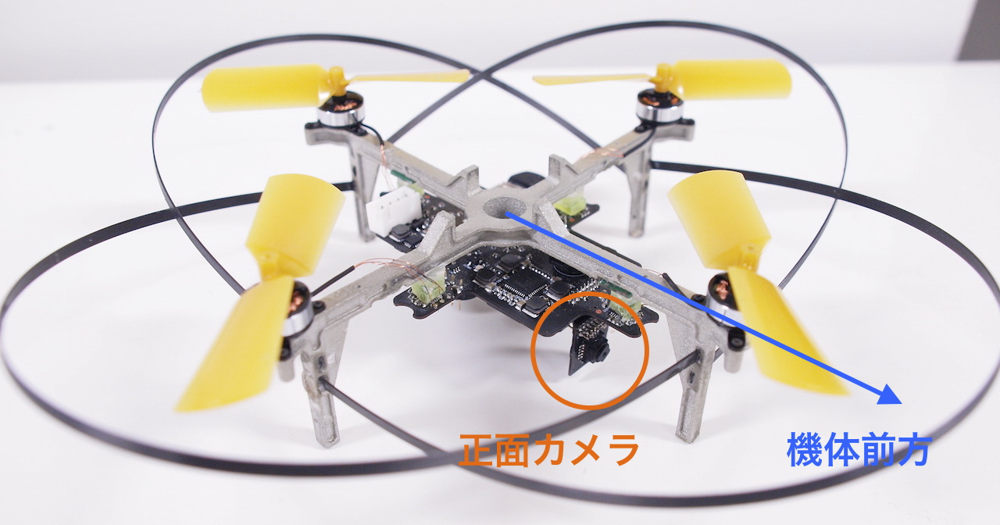
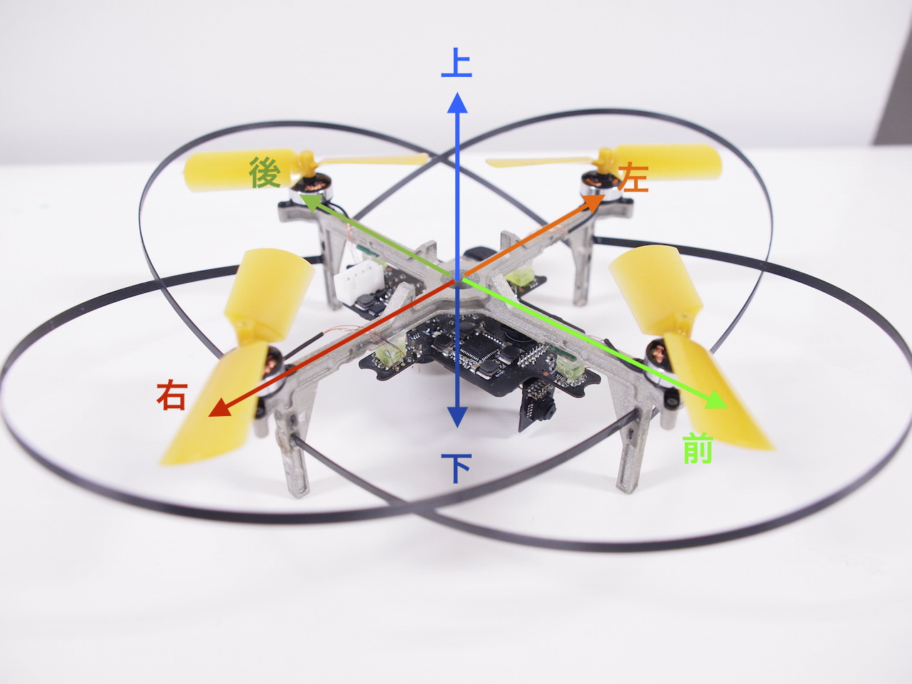

Phenox の機体構成
ここでは、Phenox 本体の機体構成について説明します。 Phenox は主にフレーム、電子回路、モーター、プロペラ、プロテクターから構成されています。
TODO: 名称の写真を入れる。
Phenox には前後左右上下があります。まず、機体フレームに対して電子回路及び足が出ている方の側面が下、反対側のプロペラがついている方の側面が上になります。

写真 1 Phenox の上下
以下の写真は Phenox を上から見たところ（機体上面）、下から見たところ（機体下面）です。下面にはカメラ、SD カードリーダー、CPU、超音波センサーなどが見えます。電子部品の詳細については次章で説明します。

写真 2 Phenox 上面

写真 3 Phenox 下面
次に、Phenox の前後左右について説明します。Phenox には２つのカメラが搭載されており、一つは電子回路下面の下面カメラ、もう一つは電子回路に対して垂直に取り付けられている正面カメラです。その名が示す通り、正面カメラの向いている方向が Phenox の正面、前方になります。以下に正面カメラの位置を示します。

写真 4 正面カメラと正面方向
機体中心から、機体前方の反対方向が機体の後方、機体中心から機体前方を見たときに私たちの右手、左手に対応するのがそれぞれ機体の右側、左側になります。下にその図を示します。

写真 4 Phenox 方向